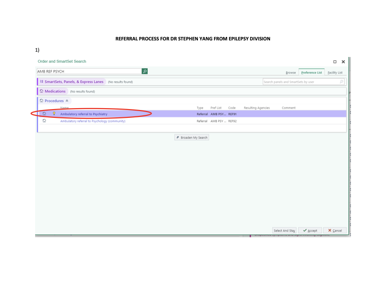

Clinic Essentials · Psychiatry Referral
Epilepsy Psychiatry Referral
Route epilepsy patients to the dedicated Psychiatry pipeline in Epic.
Place the referral in Epic
4 steps- Search AMB REF PSYCH and select Ambulatory referral to PsychiatryThe supplied screenshot shows this order, rather than the community Psychology referral.
- Choose provider Stephen Yang
- Set the reason to Other – Epilepsy
- Enter your clinical question. State the psychiatric concern, prior medication trial and response, and relevant ASM/seizure-control context. Include a PHQ-9 or GAD-7 if available; neither is required.
Order selection is shown in the screenshot. Provider, reason, and clinical-question instructions are from the supplied internal email.
View the supplied Epic order screenshot

Who fits this pathway?
Epilepsy patients with psychiatric comorbidities, especially:
- Persistent psychiatric symptoms or impaired functioning despite at least one medication trial at an adequate dose and duration.
- Psychiatric adverse effects from an epilepsy treatment, where psychiatric medication may help.
- Complex polypharmacy needing Psychiatry input to simplify and optimize treatment.
Make the referral goal specific
“Persistent mood disorder despite Celexa x 6 months, please assess for alternatives. Patient ASM regimen currently controlling seizures.”
Example from the email; adapt to the patient’s actual history.
What Psychiatry provides
- Management through stabilization. Psychiatry treats psychiatric comorbidities and considers the consultation complete once the patient is stable. The email notes follow-up may extend to 1–2 years when needed; it is not limited to a single visit.
- Additional support stays with the epilepsy team. The email reports no Psychiatry social-work capacity for this pathway. Work/disability letters and other additional needs continue through the epilepsy team.
Capacity & review status
The email reported 15–20 new referrals per month for the next few months, with capacity subject to change.
Source: internal email and Epic screenshot supplied September 24, 2026. This guide summarizes the supplied workflow; it is pending local review and is not approved institutional policy.